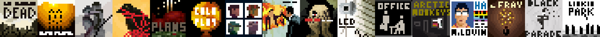
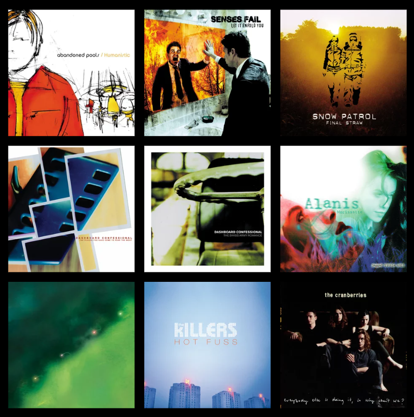

I'm a CS undergrad who has liked the idea of creating my own stuff since the age of 3 but isn't very good at it. I don't play games that often anymore, I mostly listen to music, make a simulation or otherwise bide my time unwisely.
My main claim to fame is the YouTube channel I have that randomly blew up one day in 2016. I consider myself an 'Algotuber' though I don't make the same kind of content that most others in my genre make.
You may know me as a:
I may go by other names online such as 'Archavian', 'CharkenNoodel' etc, but the psuedonym I use most is GreenieGuest which I've used since 2014.

Music is the best escape from the troubles of the world. Most of my music taste is inherited from the indie game series "Emily is Away" hence my heavily 90's-and-2000's music taste. (Also sarah. Thanks Sarah!)
My favorite artists in order are:
I'm also a contestant in fellow CS major Cary Huang's creative writing competition "Eleven Words of Wisdom". Check out the statistics spreadsheet here: EWOW Statistics Spreadsheet
I'm very notoriously uncultured but I do still have some supplements of culture in me. (I also have a very clear liking for time travel which reflects in my taste, and I would abuse it if it were real)